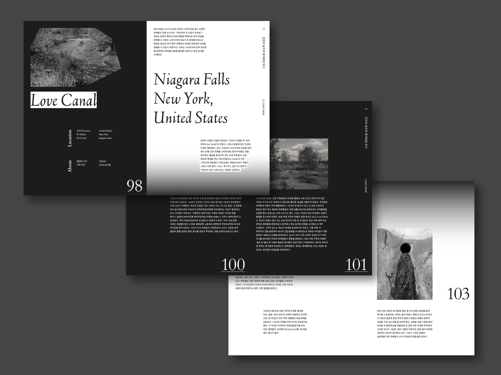
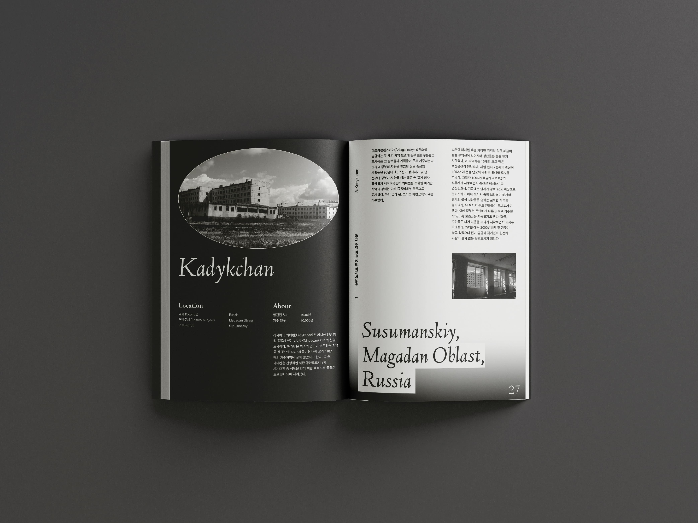
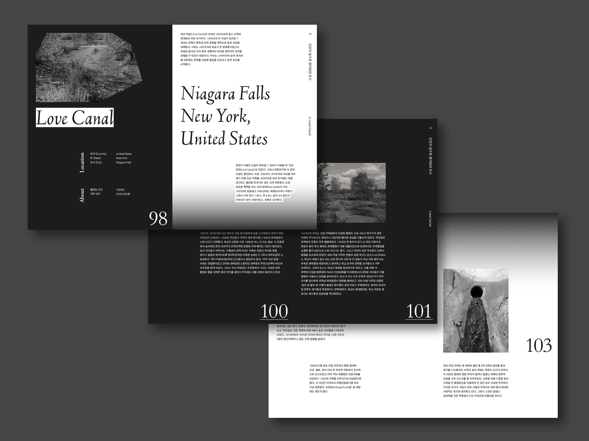
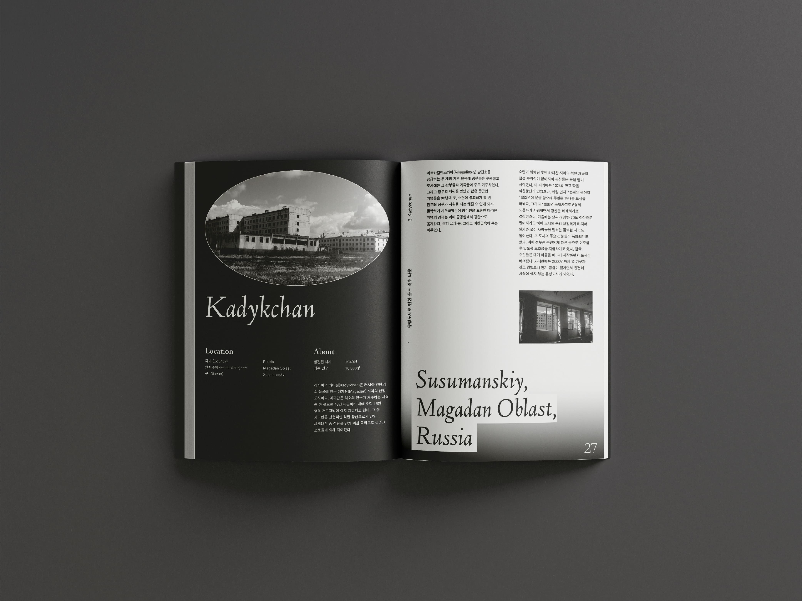

Ghost Town
유령 도시
세계 각국의 버려진 도시들, '유령 도시'를 주제로 하였다. 유령 도시는 예전에는 사람들이 살았으나 지금은 주민의 대부분이 떠나 더는 사람들이 거주하지 않는 도시를 말한다. 현재 많은 유령 도시는 특유의 스산한 분위기 때문에 관광객들이 많이 찾는 관광지로 운영되는 곳이 많다. 하지만 유령 도시는 단순한 관광지 이상의 많은 역사를 담고 있으며 각자의 사연들을 가지고 있다. 이러한 유령 도시 각각의 이야기들과 정보를 잘 전달하기 위한 것을 가장 큰 목표로 하여 디자인하였다.
서은우 nunu0567@naver.com

 


